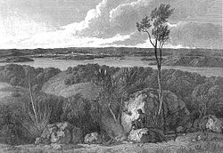
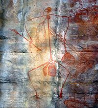
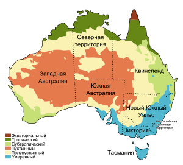
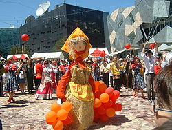
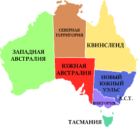
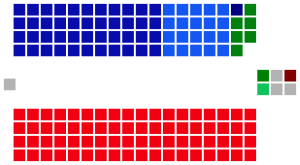

Этимология названия
Термин «Австралия» (англ. Australia, [əˈstɹæɪljə, -liə] в австралийском английском[12]) происходит от
лат. austrālis («южный»). В разговорной речи австралийцев для обозначения Австралии используется слово
Oz. Для обозначения прилагательного «австралийский» австралийцами используется слово Aussie ([ˈɒzi]).
Легенды о Неведомой Южной земле (лат. Terra Australis Incognita) — «неизвестной земле на юге» — восходят
к временам Римской империи и были обычным явлением в средневековой географии, несмотря на то, что не
базировались на каких-либо знаниях о самом континенте.
Самыми ранними задокументированными сведениями об использовании в английском языке слова «Australia» были
написанные в 1625 году «Сведения об Аустралиа-дель-Эспириту-Санту, записанные мастером Халклайтом» (англ.
A note of Australia del Espíritu Santo, written by Master Hakluyt) и опубликованные Самуэлем Пурчасом[en]
в Hakluytus Posthumus, где испанское название Аустралиа-дель-Эспириту-Санту (исп. Australia del Espíritu
Santo), данное острову в архипелаге Новые Гебриды, было искажено до «Australia»[13]. Прилагательное
«Australische» также использовалось голландскими чиновниками Батавии (современная Джакарта) для
обозначения всех новооткрытых с 1638 года южных земель[14]. Слово «Australia» было использовано в
переведённой на английский язык книге французского писателя-утописта Габриэля де Фуаньи «Приключения Жака
Садера, его путешествие и открытие Астральной Земли» (фр. Les Aventures de Jacques Sadeur dans la
Découverte et le Voyage de la Terre Australe; 1676)[15]. По отношению ко всей южной части Тихого Океана
этот термин использует Александр Далримпл, шотландский географ, в своей книге «Историческая коллекция
путешествий и открытий в южной части Тихого океана» (англ. An Historical Collection of Voyages and
Discoveries in the South Pacific Ocean; 1771). В конце XVIII века термин используется ботаниками Джорджем
Шоу и Джеймсом Эдвардом Смитом для обозначения австралийского континента в их книге «Зоология и ботаника
Новой Голландии» (англ. Zoology and Botany of New Holland; 1793)[16], а также на карте 1799 года,
принадлежавшей Джеймсу Уилсону[en][17].
Название «Australia» стало популярным после опубликования в 1814 году «Путешествия в Terra Australis»
капитана Мэтью Флиндерса, который является первым человеком, обогнувшим Австралийский континент. При её
подготовке Флиндерс убедил своего патрона, Джозефа Бэнкса, использовать термин Terra Australis, как более
известный публике. Флиндерс сделал это, указав:

История
Предки австралийских аборигенов появились в Австралии 40—60 тыс. лет назад (по
другим данным — около 70 тыс. лет назад)[24][25]. Люди прибыли в Австралию по морю в то время, когда
Новая
Гвинея и Тасмания были частью континента, что делает их самыми ранними морскими путешественниками в
мире[26]. Заселение континента людьми началось 42—48 тыс. лет назад[27].
Самые ранние человеческие останки найдены на озере Мунго, высохшем озере на юго-востоке штата Новый Южный
Уэльс[28]. Эти останки являются одним из старейших найденных на Земле примеров кремации, что указывает на
раннее существование религиозных ритуалов среди австралийских аборигенов[29].
Искусство аборигенов считается старейшей продолжающейся традицией искусства в мире[30]. Его возраст
оценивают в 30 000 лет и его можно встретить по всей территории Австралии (в частности, на Улуру и в
Национальном парке Какаду)[31][32]. С точки зрения возраста и изобилия рисунков, наскальная живопись в
Австралии сопоставима с пещерами Ласко и Альтамира в Европе[33][34].
В период 10—12 тыс. лет до нашей эры Тасмания изолируется от материка, и некоторые каменные технологии не
смогли достичь тасманийских аборигенов (например, использование бумеранга)[35]. Во время древнейшего
периода
истории Австралии в юго-восточной Австралии часто происходили извержения вулканов[36]. В юго-восточной
Австралии, на озере Кондах[en] в штате Виктория, найдены полупостоянные поселения с большими запасами
продовольствия[37]. На протяжении веков макасары торговали с аборигенами Австралии, в частности с людьми
йолнгу на северо-востоке Арнем-Ленда.
Некоторые авторы пытались доказать, что европейцы посетили Австралию ещё в XVI веке. Кеннет Макинтайр[en]
и
другие историки утверждали, что португальцы тайно открыли Австралию в 20-е годы XVI века[38]. Наличие на
картах Дьепа[en] надписи «Жав-Ля-Гранд»[en] (фр. Jave La Grande) часто воспринималось ими как
доказательство
«португальского открытия». Тем не менее, карты Дьепа отражают незавершённое состояние географических
знаний
той эпохи, как фактических, так и теоретических[39]. Хотя теории визитов европейцев до XVII века
продолжают
привлекать много интереса в Австралии и других странах, они, как правило, считаются спорными и
недостаточно
доказуемыми.
Открытие Австралии произошло в 1606 году, когда Виллем Янсзон на корабле Дайфкен высадился на побережье
Австралии[40], назвав его Новой Голландией и объявив владением Нидерландов (голландцами она никогда не
осваивалась). В том же году испанская экспедиция Педро Фернандеса Кироса высадилась на Новых Гебридах и,
полагая, что это — южный континент, назвала его Южная Земля Святого Духа (исп. Austrialis del Espiritu
Santo)[41][42]. Позднее в этом же году заместитель Кироса Луис Ваэс де Торрес проплыл через Торресов
пролив
и, возможно, увидел северное побережье Австралии[43].

Физико-географическая характеристика
Австралийский Союз — государство в Южном полушарии площадью 7 692 024 км²[91]. Австралия является шестым
по площади государством в мире после России, Канады, Китая, США и Бразилии, занимая около 5 % поверхности
суши Земли[92]. Также является крупнейшим по территории государством, полностью расположенном в Южном
полушарии. В него входят: материк Австралия (включая остров Тасмания) площадью 7 659 861 км²[91] и другие
прибрежные острова площадью 32 163 км²[91]. Под контролем Австралии находятся несколько внешних
территорий: Кокосовые (Килинг) острова площадью 14 км²[93], остров Рождества площадью 135 км²[94],
острова Ашмор и Картье площадью 199 км²[95], территория островов Кораллового моря площадью 7 км²[96]
(площадь акватории около 780 тыс. км²), остров Херд и острова Макдональд площадью 372 км² (входят в
состав Австралийской антарктической территории)[97], остров Норфолк площадью 35 км²[98] и Австралийская
антарктическая территория площадью 5 896 000 км²[99] (суверенитет Австралии над этой территорией не
признаётся большинством стран мира)[100]. Общая площадь всех внешних территории 5 896 762 км² (без
Антарктической территории — 762 км²).
Северное и восточное побережья Австралии омывают моря Тихого океана: Арафурское, Коралловое, Тасманово,
Индийского океана — Тиморское; западное и южное — Индийский океан. Близ Австралии расположены крупные
острова Новая Гвинея и Тасмания. Вдоль северо-восточного побережья Австралии более чем на 2000 километров
тянется самый большой в мире коралловый риф — Большой Барьерный риф[101].
Австралия простирается с запада на восток почти на 4000 километров, а с севера на юг — примерно на 3860
км[102]. Крайними точками материка являются: на севере — мыс Йорк (10° ю. ш.), на юге — мыс Саут-Ист-Кейп
(43° ю. ш.), на западе — мыс Стип-Пойнт (114° в. д.), на востоке — мыс Байрон (154° в. д.)[102].
Длина береговой линии Австралии составляет 59 736 км (из них материковой части — 35 877 км, островной —
23 859 км)[103], а площадь исключительной экономической зоны — 8 148 250 км²[104].
Климат Австралии находится под значительным воздействием океанических течений, в том числе диполя
Индийского океана и Эль-Ниньо, которые создают периодические засухи и сезонное тропическое низкое
давление, которое приводит к формированию циклонов в северной части Австралии[105][106]. Эти факторы
вызывают заметное изменение количества осадков от года к году. Большая часть севера страны обладает
тропическим климатом с преимущественно летними осадками[107]. Почти три четверти Австралии представляют
собой пустыни и полупустыни[108]. В юго-западной части страны климат является средиземноморским[109]. В
большей части юго-востока страны (включая Тасманию) климат умеренный[107]. На засушливость региона влияет
холодное Западно-Австралийское течение, которое не даёт энергии для образования циклона. Нечто подобное
происходит и на западе Южной Америки, но там всё меняется с появлением Эль-Ниньо.
Почти 40 % территории Австралии получают менее 250 мм осадков в год, и 70 % — менее 500 мм. Самый
засушливый район Австралии расположен вокруг озера Эйр, в Южной Австралии. Ежегодно там выпадает менее
125 мм осадков в год. Для сравнения - в Москве выпадает 600—800 мм осадков в год, в Мадриде - 400 мм, а в
Токио - 1530 мм. Регионы, получающие много осадков, невелики по площади. Снег регулярно выпадает только в
двух местах — на высоте 1350 м в Австралийских Альпах и на высоте 1050 м в горах Тасмании[110].

Население
Население Австралии по переписи 2011 года составляло 21 507 719 человек[источник не указан 804 дня]. По
оценке на конец 2018 года — 25 180 200 человек[10].
До конца XVIII века население Австралии составляли пришедшие 40—50 тыс. лет назад австралийские
аборигены, островитяне Торресова пролива и аборигены Тасмании (между этими тремя группами существуют
культурные и даже внешние различия).
Большинство населения Австралии — потомки иммигрантов XIX и XX веков, при этом большинство этих
иммигрантов прибыли из Великобритании и Ирландии. Заселение Австралии выходцами с Британских островов
началось в 1788 году, когда на восточном берегу Австралии была высажена первая партия ссыльных и основано
первое английское поселение Порт-Джэксон (будущий Сидней). Добровольная иммиграция из Англии приняла
значительные размеры лишь в 1820-е, когда в Австралии стало быстро развиваться овцеводство. После
открытия в Австралии золота сюда из Англии и отчасти из других стран прибыла масса иммигрантов. За 10 лет
(1851—61) население Австралии увеличилось почти втрое, превысив 1 млн человек.
В период с 1838 по 1900 в Австралию прибыло свыше 18 тыс. немцев, расселившихся в основном на юге страны;
к 1890 немцы представляли собой вторую по численности этническую группу континента. Среди них были
подвергавшиеся преследованиям лютеране, экономические и политические беженцы — например, те, кто покинул
Германию после революционных событий 1848.
В 1901 австралийские колонии объединились в федерацию. Консолидация австралийской нации ускорилась в
первые десятилетия XX века, когда окончательно окрепла общенациональная экономика Австралии.
За период после Второй мировой войны население Австралии увеличилось более чем в 2 раза (после Первой
мировой войны — в 4 раза) благодаря осуществлению амбициозной программы стимулирования иммиграции. В 2001
27,4 % населения Австралии составляли люди, родившиеся за рубежом. Крупнейшими группами среди них
являлись британцы и ирландцы, новозеландцы, итальянцы, греки, нидерландцы, немцы, югославы, вьетнамцы и
китайцы.
Самый крупный город Австралии — Сидней, столица самого населённого штата Новый Южный Уэльс.
Австралийская столичная территория является самым густонаселённым субъектом в составе Австралийского
Союза — плотность населения составляет 151,49 чел./км².
Если покинуть побережье и проследовать вглубь материка около 200 километров, начнутся малонаселённые
районы континента. Буйные влажные леса и богатые сельскохозяйственные угодья сменяются жаркой, сухой,
открытой местностью, где можно встретить только кустарниковые заросли и злаки. Однако в этих местностях
тоже есть жизнь. На сотни километров простираются обширные овечьи и коровьи пастбища, известные как
станции. Дальше, в глубине материка, начинаются палящие зноем пустыни.

Административно-территориальное деление
Австралия состоит из шести штатов, двух материковых территорий и других более мелких территорий. Штатами
являются Виктория (VIC), Западная Австралия (WA), Квинсленд (QLD), Новый Южный Уэльс (NSW), Тасмания
(TAS) и Южная Австралия (SA). Двумя главными материковыми территориями являются Северная территория (NT),
и Территория федеральной столицы (ACT). Статус территорий во многом аналогичен статусу штатов, за
исключением того, что федеральный парламент может отменить любое решение парламента территории, в то
время как по отношению к штатам федеральное законодательство имеет верховенство над законодательством
штатов только в тех случаях, которые указаны в параграфе 51 Конституции. Все остальные вопросы остаются в
ведении штата, например, здравоохранение, образование, правопорядок, общественный транспорт, дороги,
судоустройство и местное самоуправление.
Каждый штат и материковая территория имеет свой законодательный орган: однопалатный в Северной
территории, Территории федеральной столицы и Квинсленде и двухпалатный в остальных штатах. Нижняя палата
носит название Законодательная ассамблея (в Южной Австралии и Тасмании — Законодательное собрание), а
верхняя — Законодательный совет. Главами правительств штатов являются премьеры, а территорий — главные
министры. Кроме генерал-губернатора Союза, монархия также представлена в отдельных штатах губернаторами,
а в Северной территории и Территории федеральной столицы — администраторами, которые выполняют функции,
аналогичные губернаторским.
Австралия владеет несколькими территориями. Федеральное правительство контролирует территорию
Джервис-Бей, расположенную в Новом Южном Уэльсе (она является военной базой и морским портом национальной
столицы). Одновременно под контролем Австралии находятся несколько обитаемых внешних территорий: остров
Норфолк, остров Рождества, Кокосовые острова; и несколько необитаемых территорий: острова Ашмор и Картье,
территория островов Кораллового моря, остров Херд и острова Макдональд и Австралийская антарктическая
территория (треть Антарктиды). Суверенитет Австралии над территорией Антарктиды не признаётся многими
государствами, в том числе Россией.

Государственно-политическое устройство
Австралия является федеративной конституционной монархией парламентского типа. Главой государства
является Королева Австралии — Елизавета II. Австралия — государство Содружества (англ. Commonwealth
realm), в котором сторонники республиканской формы правления имеют наиболее сильные позиции. Основным
законом государства является конституция, одобренная королевой Викторией в 1900 году. Конституционной
силой обладают также другие законодательные акты, например, «Акт о принятии Вестминстерского статута»[en]
и «Акт Австралии»[en].
В Австралии часто поднимается вопрос о республиканской форме правления. В феврале 1998 года в Канберре
прошёл Конституционный конвент, где большинство делегатов проголосовало за преобразование Австралии в
республику. В 1999 году по итогам конвента был проведён референдум о введении республиканской формы
правления. За республику проголосовало 45,13 % участников. Согласно данным социологического опроса,
проведённого в конце 2005 года, 46 % австралийцев желают, чтобы Австралия стала республикой. Лишь 34 %
считают, что главой страны должен быть британский монарх, при этом 52 % не желают, чтобы следующим
королём стал Принц Уэльский Чарльз, которого желают видеть будущим главой страны лишь 29 % граждан
Австралии[130][131]. Многие наблюдатели считают, что королева Елизавета II станет последним британским
монархом, возглавлявшим Австралийский Союз. В марте 2007 года премьер-министр Австралии Джон Говард
выразил сомнение, что Австралия станет республикой, пока у власти находится ныне царствующая королева
Елизавета II[132].
Основные статьи: Премьер-министр Австралии и Кабинет министров Австралии
Руководителем исполнительной ветви власти в Австралии является премьер-министр, в настоящее время — Скотт
Моррисон.
Формальным главой государства, королевой Австралийского Союза, является Елизавета II. Королева утверждает
генерал-губернатора, который имеет полномочия вмешиваться в случае конституционного кризиса, а в обычное
время играет исключительно представительскую роль[133]. Генерал-губернатор также является
главнокомандующим Вооружёнными силами Австралии, представляя в этой должности королеву. В соответствии с
конституцией Австралии и принципом Короны, несмотря на то, что Елизавета II является в одном лице
королевой Австралии и Великобритании, её власть и политическое влияние осуществляется совершенно
по-разному на территории двух стран[134][135].
Премьер-министр избирается по поручению генерал-губернатора. Премьер-министром всегда становится только
лидер партии или коалиции с поддержкой большинства в Палате представителей. Единственным случаем, когда
сенатор становился премьер-министром, было избрание премьер-министром Джона Гортона, который впоследствии
оставил свой пост в Сенате и стал членом Палаты представителей (также было время, когда сенатор Джордж
Пирс был исполняющим обязанности премьер-министра в течение семи месяцев 1916 года, в то время как Уильям
Хьюз был за рубежом)[136].
Кабинет министров Австралии назначается генерал-губернатором по рекомендациям премьер-министра
Австралии[137]. Министры, непосредственно входящие в кабинет, называются старшими министрами (англ.
Senior Cabinet minister). В заседаниях кабинета принимают участие только старшие министры, хотя и другие
министры могут присутствовать, если на повестке дня стоит область их деятельности. Встречи кабинета
проходят под председательством премьер-министра[137].Австралия имеет двухпалатный федеральный парламент,
состоящий из Сената (верхней палаты) из 76 сенаторов и Палаты представителей (нижней палаты) из 150
депутатов. В парламент также входит королева Великобритании (представленная генерал-губернатором).
Австралийский Парламент является шестой по возрасту непрерывной демократией в мире[138].
Депутаты нижней палаты избираются по одномандатным округам. Депутаты избираются на 3 года по мажоритарной
избирательной системе абсолютного большинства с предпочтительным (преференциальным) голосованием. Ни один
штат не может быть представлен менее чем 5 депутатами. В Сенате каждый из 6 штатов представлен 12
сенаторами, а каждая территория — двумя. Выборы в Сенат проходят по партийным спискам. Сенаторы
избираются на 6 лет. Каждые три года переизбирается половина Сената.
Правительство формируется из депутатов нижней палаты, причём лидер партии (или коалиции партий)
большинства автоматически становится премьер-министром.